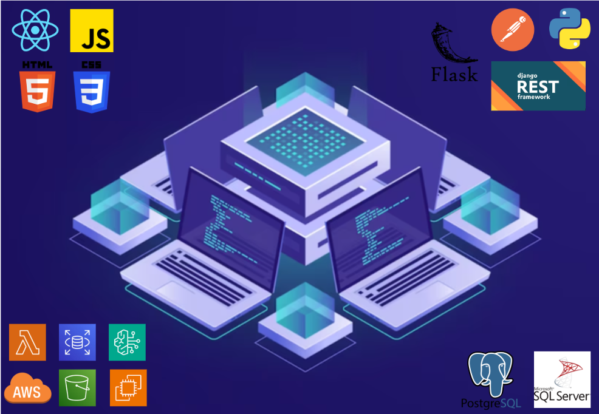

Presentación
Ingeniero Civil en Informática con experiencia en el desarrollo de soluciones tecnológicas orientadas a mejorar procesos y optimizar recursos en las organizaciones. Actualmente me desempeño como Analista de TI, con conocimientos en desarrollo frontend, backend, servicios cloud, bases de datos y gestión de incidencias de software. Me motiva aportar soluciones prácticas, escalables y alineadas con los objetivos de la organización. Destaco por mi enfoque en el trabajo en equipo y la búsqueda constante de oportunidades de mejora.
Títulos y Certificaciones

Conocimientos
- Frontend: Framework React, Figma para Mockups
- Backend: Flask, Django Rest Framework.
- Lenguajes de Programación: Python, JavaScript.
- Bases de Datos: PostgreSQL, SQL Server.
- Cloud: Amazon Web Services (EC2, S3, AWS LAMBDA, RDS, AWS BEDROCK).
- Sistemas Operativos: Linux, Windows Server.
- Metodologías Ágiles: Kanban, Scrum.
- Plataforma para Gestion de Incidencias/Proyectos: Jira.
- Otras herramientas: Power BI, Microsoft Office, Lucidchart, Postman, Slack, Git, Canvas.
